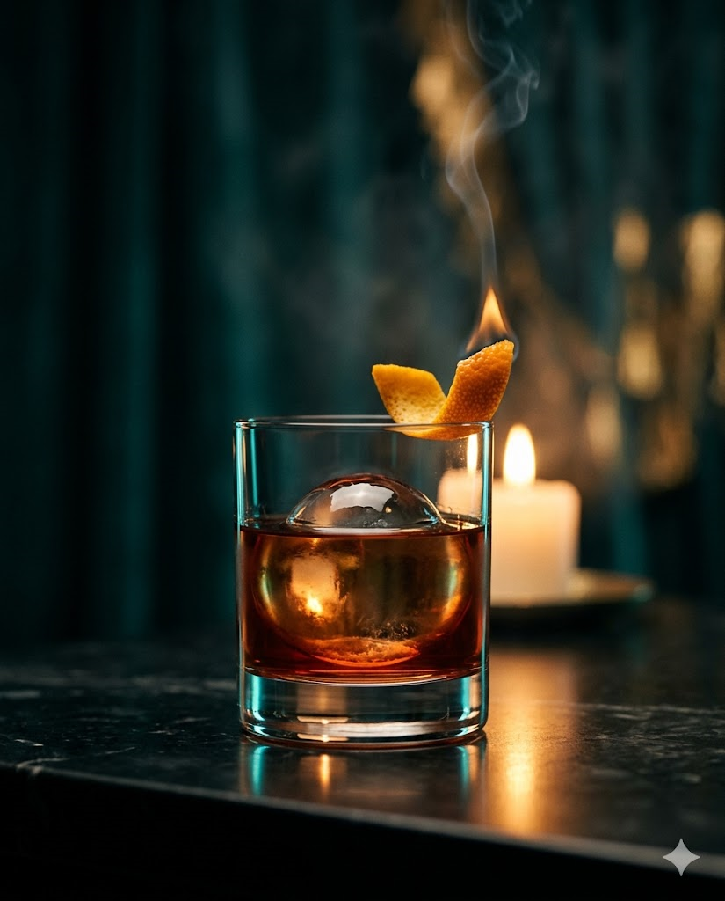

MezcalCampariVermouth
Mezcal Negroni Muerto
₽ 890Горечь, дым, память
Классический Negroni переведён на мескаль Espadín выдержки 8 месяцев. Подаётся с угольным льдом и цедрой жжёного апельсина на тлеющей щепе.
Oaxaca, Mezcal Espadín